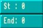
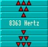
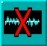
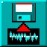
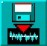
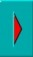
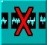
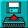

The Control Panel
The lower third of the screen is occupied by all of the control buttons that operate the Sample Bank Maker. Please load some samples now, before they can be demonstrated.
Load Bank
the control buttons as usual. Have your "AMOSPro_Examples" disc ready in the drive, and
prepare to edit "Mixture.Abk" after pressing the [Load Bank] button. The numbers, names and
lengths of all the samples in this bank should now appear in the display window.
Load current sample from bank
 Now load one of the samples into the Current Sample Window, ready for testing.
Now load one of the samples into the Current Sample Window, ready for testing.
For example, select "Bubbler by highlighting its name with a mouse click and pressing the
[Left arrow] transfer button.
As soon as a current sample has been transferred, all of the
other control buttons become active.
Hear a sample
If your audio system is ready, [Hear] the current sample now. See how the
frequency pattern is shown between the start and end borders of the Current
Sample Window. You are now ready to begin editing the sample.
Start and end of sample

Trigger the small [Start] and [End] arrows to move the settings for the beginning
and end of the current sample. As soon as these settings are moved from the left
and right boundaries of the window, vertical lines appear to mark the new start
and end positions. You can also click directly on the start and end lines in the Current Sample
Window, and drag them to change their positions.
Frequency settings

The frequency at which a sample is played is measured in Hertz, and by changing
this frequency some wonderful effects can be synthesised.
This panel contains sets of up and down arrow buttons, with
 for the rapid raising of the frequency, the
button for fine-tuning downwards, and so on. Try changing the frequency of the current sample now,
by decreasing the Hertz setting.
Settings are normally made using the left mouse button,
but use of the right mouse button will cause rapid level changes.
for the rapid raising of the frequency, the
button for fine-tuning downwards, and so on. Try changing the frequency of the current sample now,
by decreasing the Hertz setting.
Settings are normally made using the left mouse button,
but use of the right mouse button will cause rapid level changes.
Re-name sample
Trigger this button if you want to change the name of the edited sample, before storing
it in the bank. Up to eight characters can be typed in after the prompt, and the new
name will appear at the top of the screen.
Erase current sample

This button is used to erase the currently edited sample.
It does not effect the original
version of this sample stored in the sample bank.
Save current sample

When you have finished editing the current sample, you can [Save] everything that is
held between the start and end lines in the Current Sample Window as an IFF file on the
current disc.
This type of file is commonly used to store data that can be read by
different sampler packages and computers. Any changes that have been made to the sample
frequency and name will be saved as well as the actual sample data.
Load raw sample

When a "raw" sample is loaded, its name is computed from the filename, and its
frequency is automatically set to 8363 Hertz, which is the Noisetracker default setting. If a
sample is held in IFF, its own name and frequency are grabbed automatically.
Return sample to bank

If you decide that you want to store any edited changes that have been made to the
current sample,
use the large Right Arrow button to deposit the sample back in the
sample bank.
The remaining buttons listed below are used to affect the sample bank
itself, as opposed to any current sample.
Insert empty sample
 This button inserts an "empty" sample at the position which is currently highlighted
in the bank. This position can be anywhere you wish. It remains empty,
waiting to be filled by an edited copy of the current sample.
This button inserts an "empty" sample at the position which is currently highlighted
in the bank. This position can be anywhere you wish. It remains empty,
waiting to be filled by an edited copy of the current sample.
Delete a sample

This is a powerful control button, and care should be taken when using it!
The highlighted sample is totally erased from the sample bank, and it can not be recovered.
Clear sample bank
To clear the entire sample bank, use this button.
Again, it must be emphasised that once
the samples in the bank have been erased from memory, they cannot be recovered.
Always keep back-up copies of your samples on another disc.
Save As
To save the edited sample bank with a new identity onto disc, the [Save As] option
should be used.
After a prompt, you can type in the new name for the bank, which will
appear above the sample bank window.
Save bank

If you do not need to change the name of the bank, simply trigger the [Save Bank]
button,
and it will be saved to the current disc.
Quit
To leave the Sample Bank Maker, use the [QUIT] button, which is at the top of the
screen, and you will be returned to the familiar AMOS Professional Edit Screen.